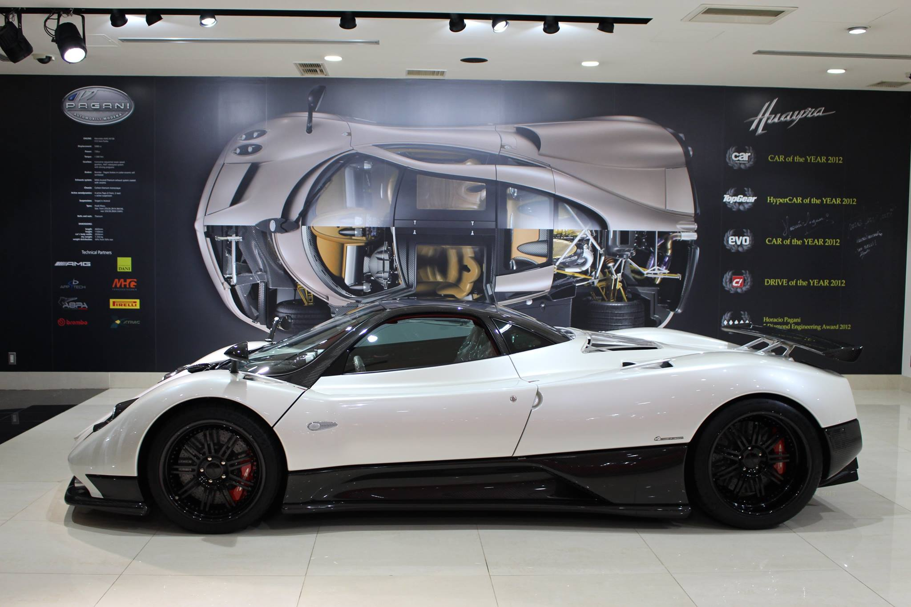

Pagani
The Zonda F

The Pagani Zonda F was designed to reflect the shared philosophy between Horacio Pagani and world champion race driver Juan Manuel Fangio, which entails a commitment to a mission, a vision and a goal without neglecting essential concepts such as lightness, safety, performance and inventiveness.

What makes it so special?
Pagani and Fangio's friendship was heading far beyond the simple desire for a Mercedes-Benz engine, reached its highest point in 2005 with the creation of the Zonda F supercar, with logo, design concept and name entirely dedicated to Fangio.
The Pagani atelier, therefore, takes its design inspiration from the Fangio model and the outcome is an innovative and exclusive creation featuring a 12-cylinder Mercedes-AMG 12 engine, more evolved and lightweight, astonishing and fascinating compared to its predecessors, with maximum output power of 650 HP and 780 Nm torque. By following this path, Pagani manages to achieve a rare gem of luxury, endowed with character, style and a personality of its own, which reflects not only the artisan touch of its creator, but also his very inspiration.
Zonda F is the first car ever to display, upon client’s request, an exclusive bodywork in natural surface carbon fibre, according to a project philosophy which is just as transparent, pure and natural.
Zonda F Specs & performance
| Built in | Italy |
|---|---|
| production | 25 Units |
| engine | Mercedes Benz M180 V12 |
| aspiration | Natural |
| power | 480 kw / 643.7 bhp @ 6200 rpm |
| torque | 1057.54 nm / 780 ft lbs @ 4000 rpm |
| redline | 7000 rpm |
| transmission | 6-Speed Manual w/Twin Plate Clutch |
| top speed | ~345.94 kph / 215 mph |
| 0 – 100 kph | ~3.5 seconds |
Watch Horacio Pagani drag race a zonda F